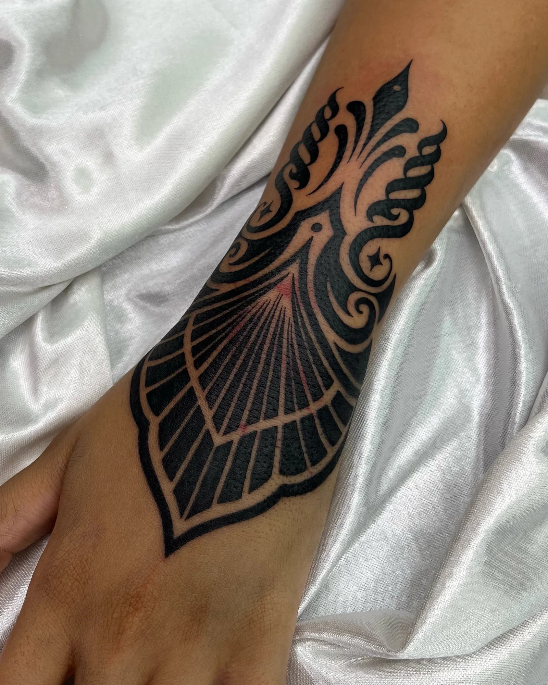
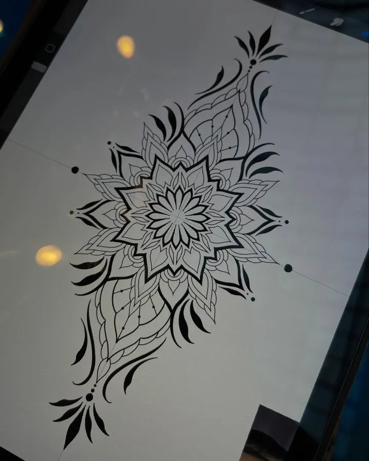
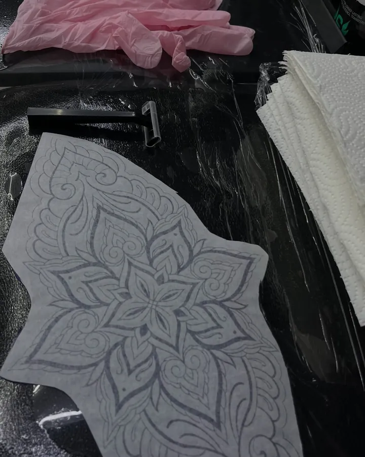
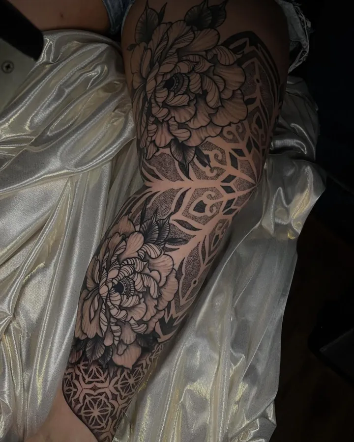
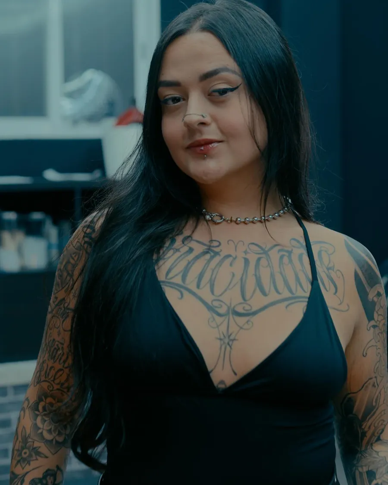
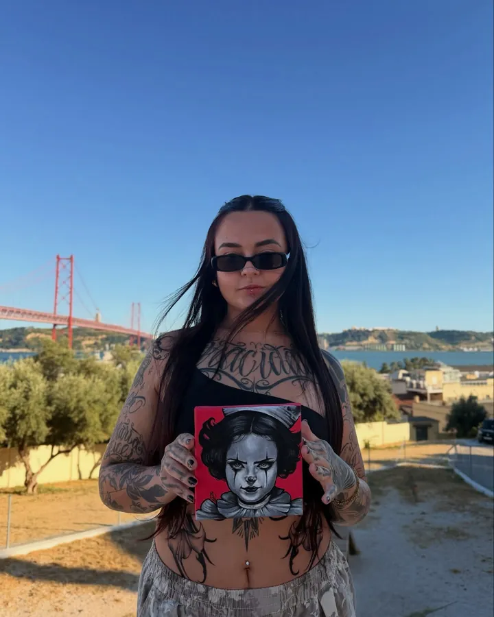

Tatuadora em Lisboa
Ornamental desenhado para o teu corpo.
Sou a GV. Cada peça nasce para a anatomia de quem a vai usar: pé, mão, pescoço ou um braço inteiro.
- Artfakt Tattoo Alcântara, Lisboa
- Agenda aberta
- Estilos ornamental, mandala, floral, dark
Trabalhos
Fotos tiradas logo depois da sessão, no cetim branco de sempre.
Como nasce um projeto
Não trabalho com moldes prontos. O desenho é feito para a zona do corpo, para as tatuagens que já tens à volta e para o que queres contar.



Conversa
Envias a ideia, a zona do corpo e uma foto do local. Se já tens tatuagens perto, mostra-as: o encaixe parte daí.
Desenho à medida
Desenho por cima da tua anatomia, para a peça acompanhar o corpo em vez de ficar só pousada nele.
Decalque e ajuste
No dia, o decalque vai à pele e ajustamos juntos até assentar bem, de pé e em movimento.
Sessões
Peças grandes fazem-se por etapas. Um fechamento de braço chegou a doze sessões, sem pressa.
Cicatrização
Recebes os cuidados por escrito e acompanho a recuperação até a pele sarar.
A tatuagem tem de ser uma arte bonita, mas também tem de fazer sentido no corpo.
GV


A GV
Comecei a tatuar em 2021, em São Paulo. Em 2024 foram 285 sessões, quase todas de projetos pensados do zero.
Em fevereiro de 2026 mudei-me para Lisboa e hoje atendo no Artfakt Tattoo. O ornamental é o estilo que mais me prende: mandalas geométricas, florais e dark ornament que encaixam no corpo e o vestem.
Fora da pele, pinto a acrílico sobre tela. A primeira em solo português foi feita em julho.
- 2021
- a tatuar desde
- 285
- sessões em 2024
- 12
- sessões no maior fechamento de braço
Artfakt Tattoo
Atendo no Artfakt Tattoo, em Alcântara, Lisboa. A morada completa e a hora seguem com a confirmação da marcação.
- Onde Alcântara, Lisboa
- Marcações por WhatsApp, com orçamento antes
- Fora de Lisboa guest em Leiria em 2025; novas datas no Instagram
Pedir orçamento
Preenche o que souberes. A mensagem fica pronta, copiada, e o WhatsApp da GV abre a seguir: é só colar e enviar com as fotos do local.